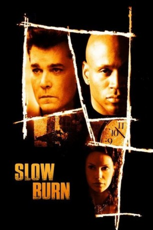

#10762 Slow Burn - Verführerische Falle
Alternativ: Slow Burn (Englischer Titel)
 
 IMDB-Wertung: 5.8 / 10
IMDB-Wertung: 5.8 / 10  Metascore: 34
Metascore: 34 
Der erfolgreiche Distriktsstaatsanwalt Ford Cole träumt von politischen Ämtern, da bestürzt ihn ein Vergewaltigungsfall. Das Opfer: Seine beste Kollegin - und Geliebte - Nora. Der Täter: tot, in Notwehr erschossen. Als kurz darauf der mysteriöse Luther erscheint und ihrer Aussage widerspricht, weiß Ford nicht mehr, wem er glauben soll, hat aber nur ein paar Stunden, um die Wahrheit herauszufinden. Vieles deutet in Richtung Gangsterboss Danny, den jedoch noch keiner identifizieren konnte.
Jahr: 2005
Dauer: 88 Minuten
FSK: 12
Land: USA Studio: LionsgateTonspuren: DTS - ,
Untertitel:
Auflösung: 1080p (1920x1080) Größe: 7290 MB
Genre: Thriller, Drama, Mystery
Regisseur: Wayne Beach
Drehbuch: Wayne Beach, Wayne Beach, Anthony Walton
Soundtrack: Jeff Rona
Darsteller:
Datei: X:\2005(N-Z)\Slow Burn - Verführerische Falle (2005, FSK12, 1920x1080).mkv seit 22.02.2019
Festplatte: HD 2005(G-Z)-2006(A-Z)
 Es gibt insgesamt 50 Filme in der Gruppe '2005(N-Z)'
Es gibt insgesamt 50 Filme in der Gruppe '2005(N-Z)'